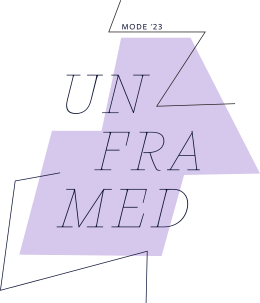
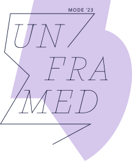
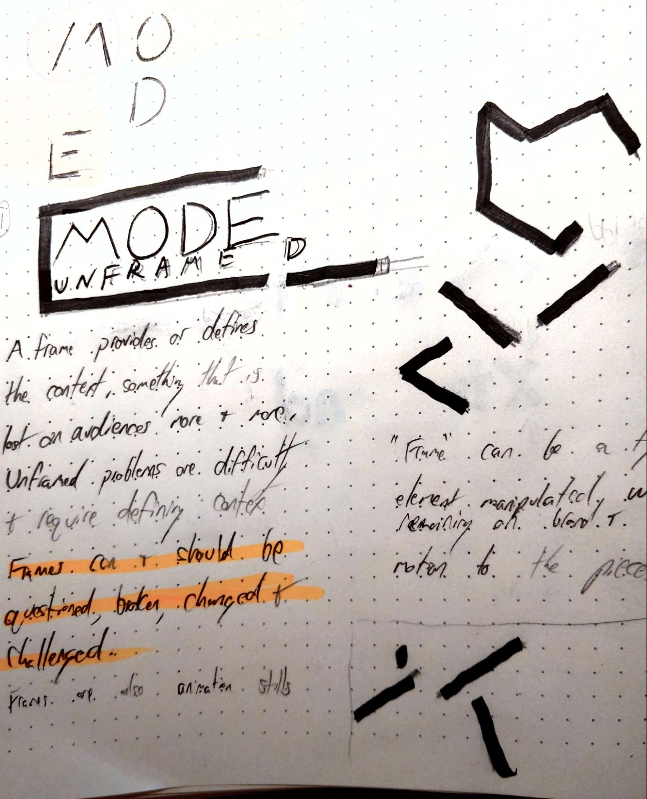
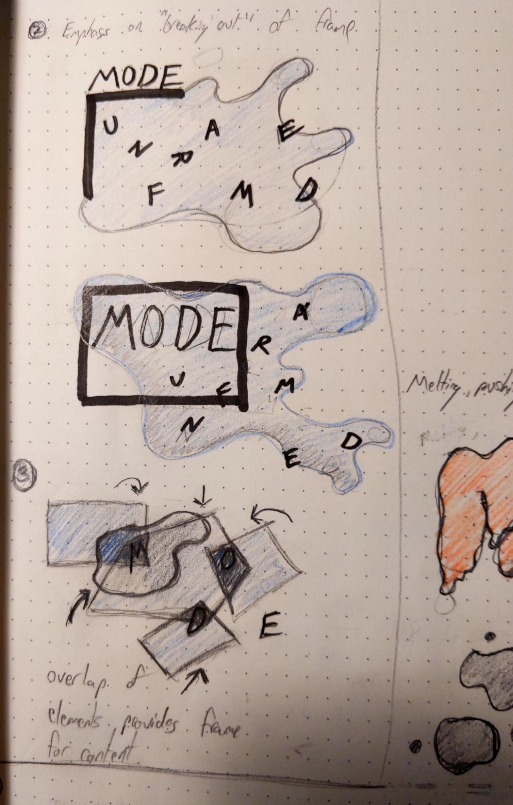
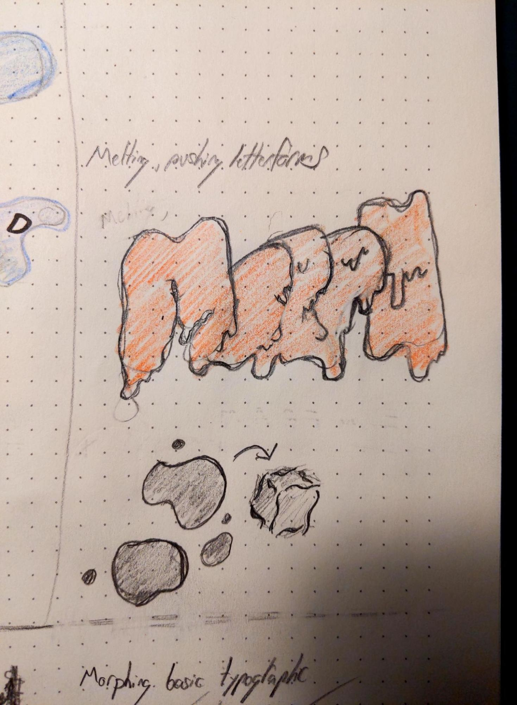
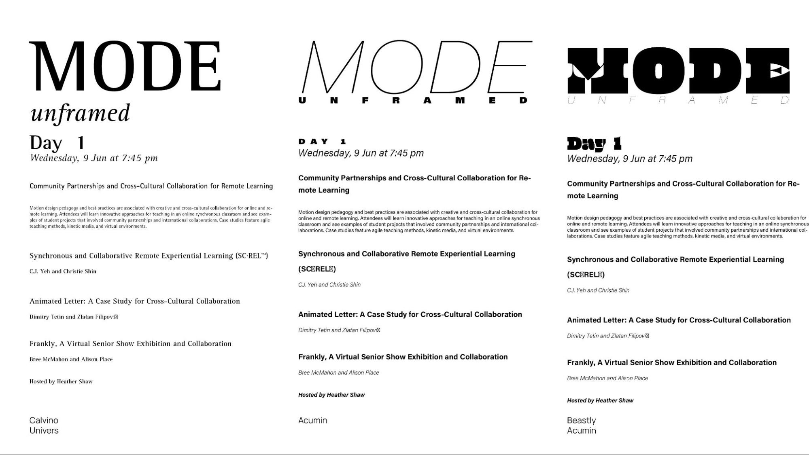
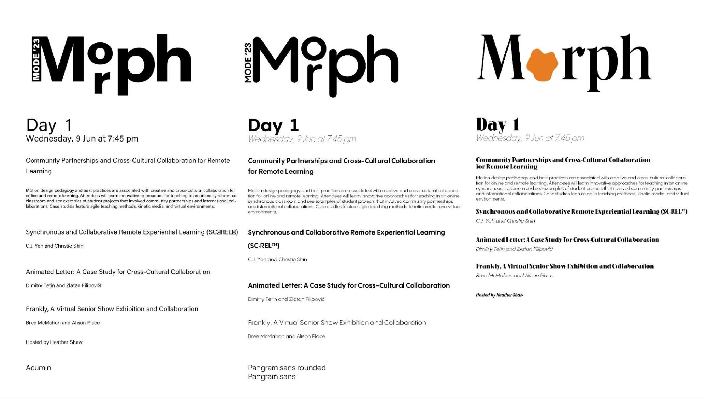
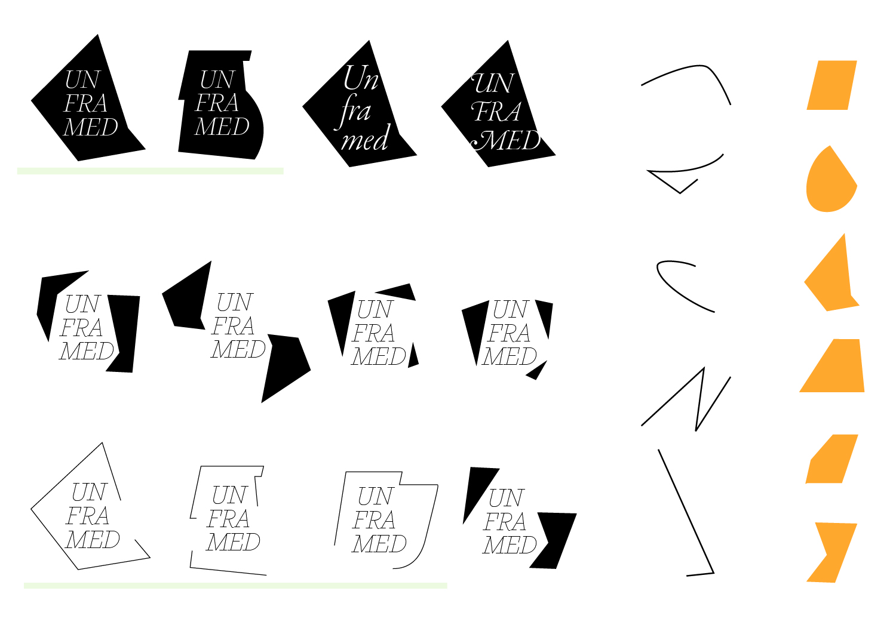

Create and demonstrate a brand identity for MODE's 2023 conference.
Audience
Motion design educators and professionals across higher education, professional
practice, and professional development.
Constraints
The identity needed to house keynotes and topics that were not yet determined, and
wouldn't necessarily be developed to fit within the identity. It was asked that the solution be primarily
typographic in nature.
Solution
Concept
MODE '23: Unframed recognizes the concept of framing in all forms of design education, including
motion. Context and framing have become especially important topics outside of the classroom as our society
grapples with complex and unframed problems.
Environmental signage using the identity.
Unframed asks design educators to give their students not only the confidence to look at problems in context
but to unframe and reframe them — using frameworks and theories as tools rather than restrictions.
Such a broad concept allows the identity to be flexible enough to house speakers and workshops on any topic.
The conference program was a key deliverable for this identity.
The elements of shape and line are flexible enough for any
application.
Mark System


The Unframed concept lends itself to a mark system rather than a single logo. Elements within the
system can be reconfigured or invented for an endless variety of visuals for diverse situations that can
speak with a singular distinct voice.
The mark system is composed of three elements:
Background plane
Accent strokes
Logotype
Animation
The mark system was designed with animation in mind.
As a motion design society, the identity wouldn’t be complete without lending itself to animation. The mark
system was composed to withstand shapeshifting forms that can frame and reframe the logotype.
Other motion elements remain energetic and abstract. Like the mark system, shapes and strokes are derived
from the main typeface for the identity.
A backing track of drum cadence links the bright and dynamic energy of the imagery to audio.
Color Palette
Conference organizers wanted the palette for 2023 to reflect the year and location. After presenting a
variety of options, the palette was narrowed to feature 2023’s color of the year with with complementary
colors acting as supports for darker applications and moments where color needed to inject energy into the
design.
Process
Ideation began by considering single words that could be used as overarching themes and then writing a rough
description that justifies them. It was important that they be topical enough to capture the present moment
but not so obvious or specific that they distract from the actual content of the conference, which was yet
to be determined.
The written word was a useful initial exploration because it allowed the generation of a framework for
evaluating typographic solutions. The words and adjectives used to describe the concept could be used to vet
typefaces and forms moving forward.
Three initial options were chosen including:
Morph
We exist in a period of accelerated change that often relies on evolution and transformation rather than 1 for 1 replacement of ideas and norms, resulting in something different rather than completely new.
XR will give motion design exponential extension into everyday design problems and real-world
interactions. How can motion design education provide the necessary skills and extend application of its tools to meet these new opportunities?
Expansion | Depth | Tracking | Extension of forms | Extrusion | Dimension
Unframed
There is a growing societal emphasis on needing to understand context. This also references the way design students are taught to tackle complex problems and motion design as a practice that relies on frames.
Interestingly, even though the final solution retained the Unframed concept, ideas and explorations from each initial idea made their way into various artifacts.
After concepts were written out, sketches were made to explore possible visual directions for each one.



Refinement of the concepts was continued with type studies. A key deliverable of this project was a programme mock for the entire conference, meaning the typefaces would need significant range for a deep hierarchy.


Type explorations naturally flowed into layout and mark explorations. Shapes and accent elements were created by deconstructing the chosen headline face—Calvino Monoline Italic. The deconstructed typeface served as the basis assuming that if forms were derived from the type, everything would inherit and internal logic naturally.

Mark explorations conducted with shapes derived from the headlining typeface.
When the initial proposal was finalized and the pitch was selected by the MODE committee, I worked with them to produce color studies and smaller versions of the logo for the final piece.